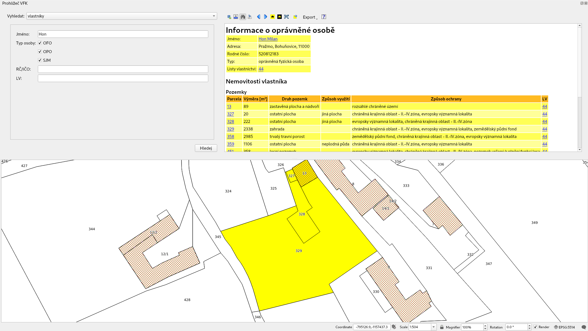

Zásuvný modul QGIS pro práci s katastrálními daty ve formátu VFK¶
QGIS VFK Plugin pracuje s daty českého katastru nemovitostí a to v takzvaném výměnném formátu katastru označovaném VFK (Výměnný formát KN). Plugin umožňuje vyhledávání, zobrazování a export informací vedených v katastru nemovitostí.
